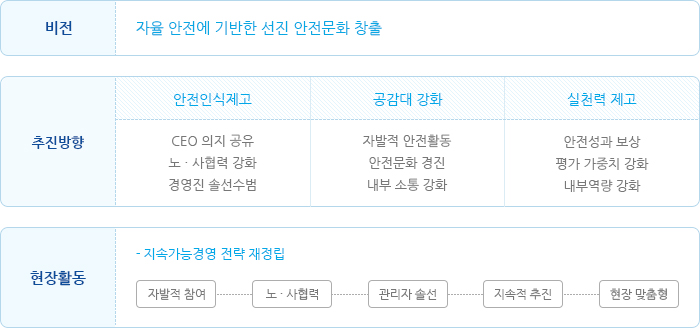
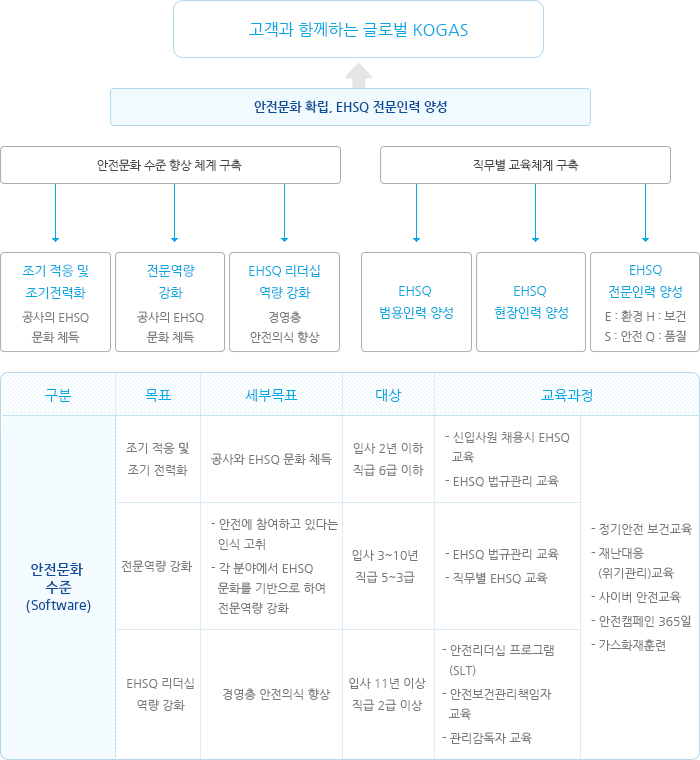

안전경영
안전수준향상
안전문화 증진을 통한 안전행동 기반 강화
CEO Message : 실천하는 안전문화 창출 안전은 스스로 생활 속에서 실천하는 문화가 필요하며, 이를 위해 각 현장에서 자발적인 안전문화 증진 방안을 노조와 협의하여 추진하고 잘한 것은 칭찬하고 서로 공유하는 전사적인 안전문화 증진 활동 전개 … (KOGAS 전략토론회)

- 비전
자율 안전에 기반한 선진 안전문화 창출
- 추진방향
- 안전인식제고
- CEO 의지 공유
- 노·사협력 강화
- 경영진 솔선수범
- 공감대 강화
- 자발적 안전활동
- 안전문화 경진
- 내부 소통 강화
- 실천력 제고
- 안전성과 보상
- 평가 가중치 강화
- 내부역량 강화
- 안전인식제고
- 현장활동
현장 중심의 자율 안전문화 정착
- 자발적 참여
- 노·사협력
- 관리자 솔선
- 지속적 추진
- 현장 맞춤형
EHSQ 교육훈련 시스템 구축
안전에 대한 경영진의 의지를 공유하는 다양한 현장 활동에서 출발하여 지속적인 교육을 통한 인식 및 전문성을 강화하고 현장의 자발적 활동을 이끌어 내고 있습니다. 또한 임직원의 안전의식 수준을 향상시키며 글로벌 전문기업으로 발돋음 하는 데 초석이 되는 EHSQ 분야의 전문인력을 양성하기 위해 지속적인 교육훈련을 실시하고 있습니다.

EHSQ 교육로드맵
고객과 함께하는 글로벌 KOGAS안전문화 확립, EHSQ 전문인력 양성
- 안전문화 수준 향상 체계 구축
- 조기 적응 및 조기전력화 - 공사의 EHSQ 문화 체득
- 전문역량 강화 - EHSQ 문화 기반으로 전문역량 강화
- EHSQ 리더십 역량 강화 - 경영층 안전의식 향상
- 직무별 교육체계 구축
- EHSQ 범용인력 양성
- EHSQ 현장인력 양성
- EHSQ 전문인력 양성
| 구분 | 목표 | 세부목표 | 대상 | 교육과정 | |
|---|---|---|---|---|---|
| 안전문화 수준(Software) | 조기 적응 및 조기 전력화 | 공사와 EHSQ 문화 체득 | 입사 2년 이하 / 직급 6급 이하 |
|
|
| 전문역량 강화 |
|
입사 3~10년 / 직급 5~3급 |
|
||
| EHSQ 리더십 역량 강화 | 경영층 안전의식 향상 | 입사 11년 이상 / 직급 2급 이상 |
|
||